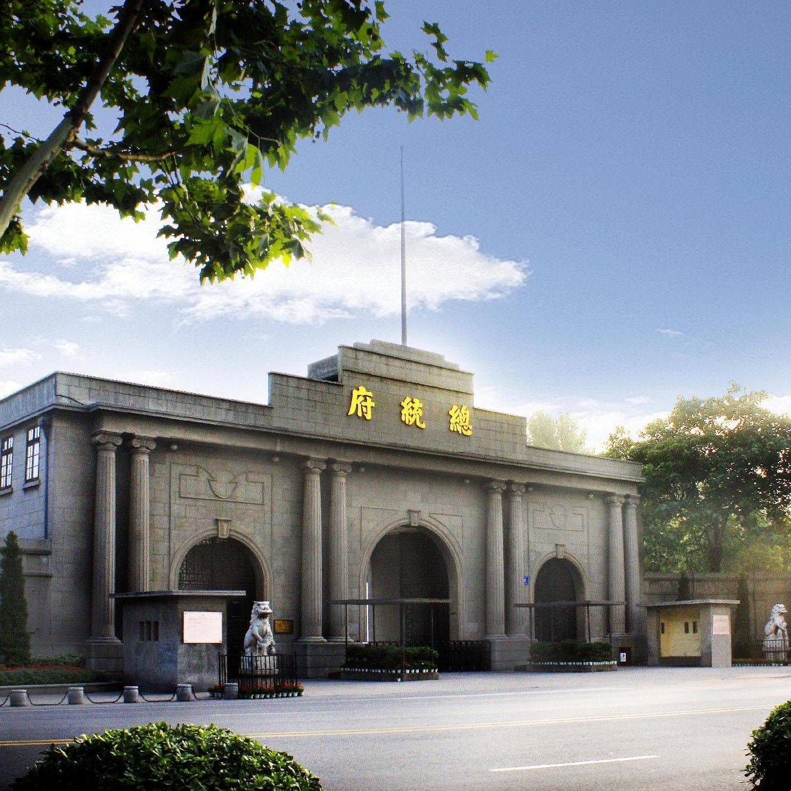
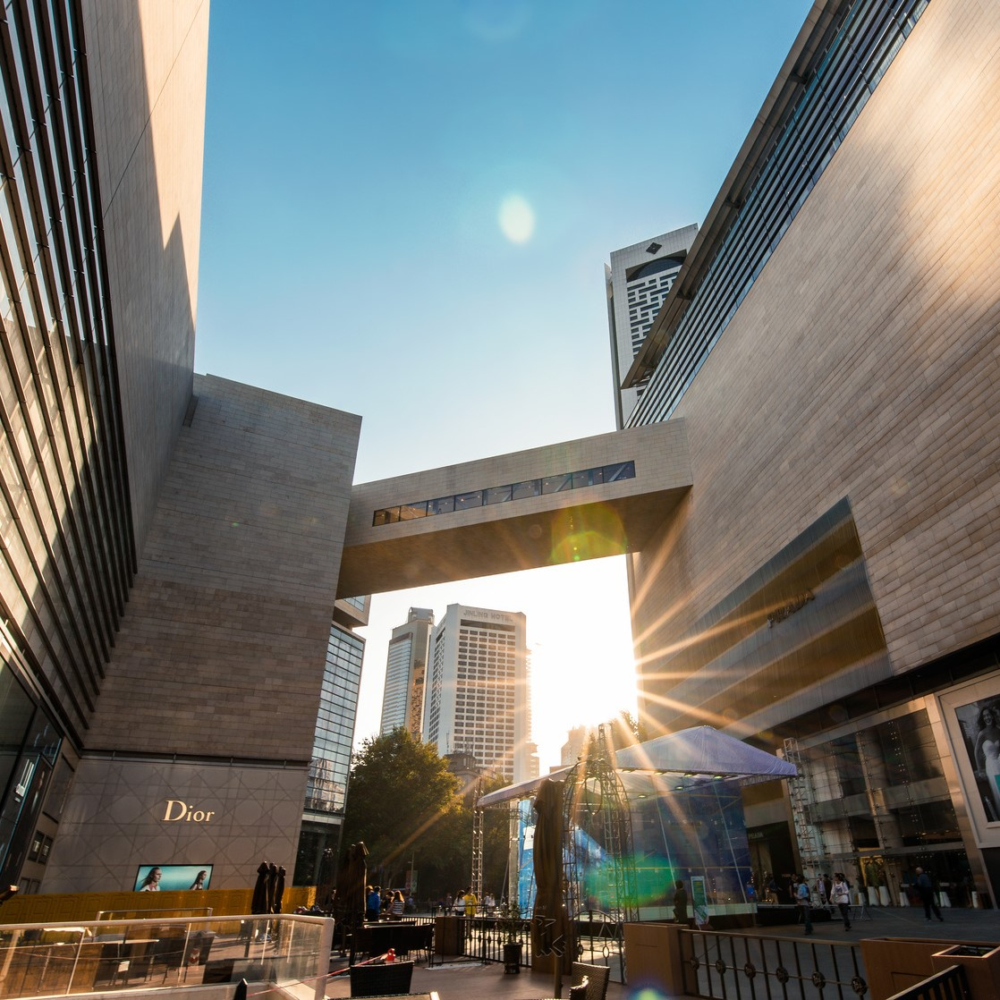
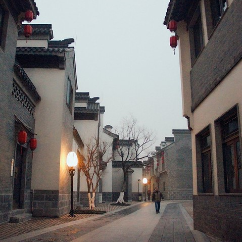
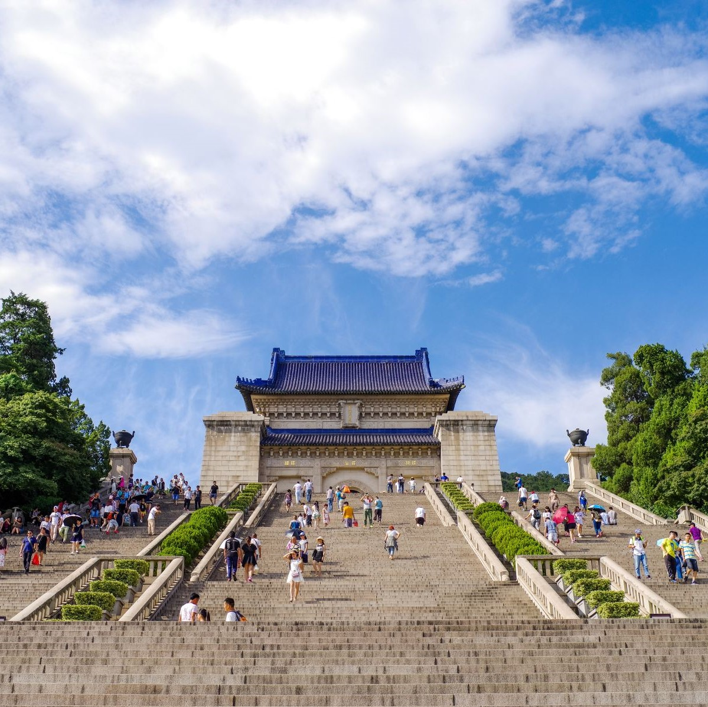
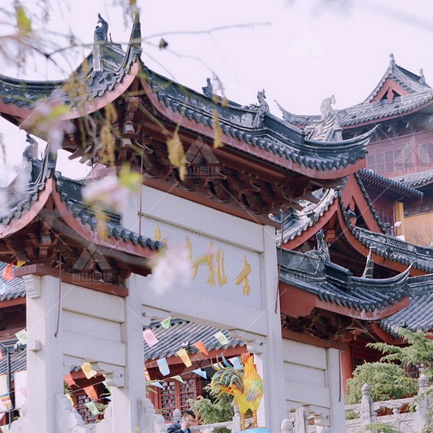
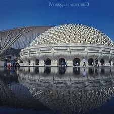
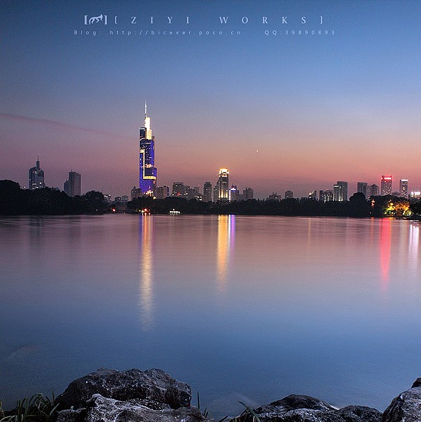
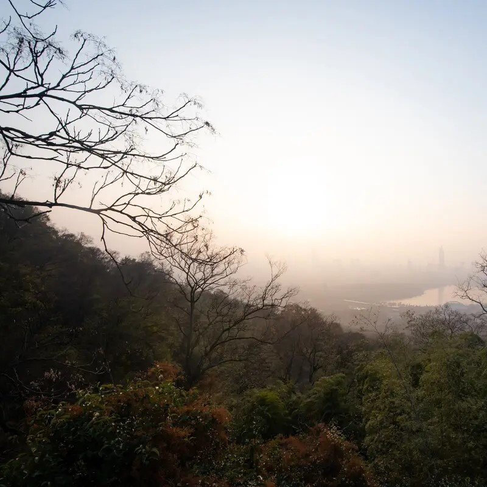

全域旅游地图

专栏A
TOP
专栏B
TOP
专栏C
TOP
专栏D
TOP
热门景点
拍照好去处
TOP
人气美食
味蕾在尖叫
TOP
人气酒店
住宿好去处
TOP
当地特色榜
原汁原味
TOP

什么是佩奇？来南京过年，赏花灯、去夫子庙、吃小吃
南京的美食，还是记忆中的味道
南京的诗意生活，从翻开这本美丽日历开始
更多
景区
美食
酒店名宿
特色产品

夫子庙

总统府

新街口

老门东

中山陵

鸡鸣寺

牛首山

玄武湖

紫金山